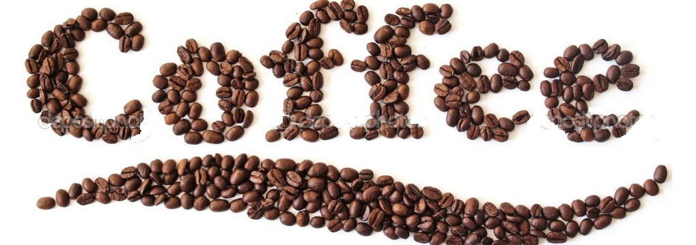

Instrukcja
 Na widok tak pieknie ozdobionej kawy otwieramy usta ze zdziwienia i zastanawiamy sie: „jak to sie robi?!” Otoz malowanie: serduszek, wzorkow, kwiatkow, zwierzatek i innych ozdobnikow na mlecznej piance wpisuje sie w zlozona dziedzine sztuki baristycznej, nazywana wlasnie latte art (w doslownym tlumaczeniu: „sztuka mleczna”).
Wbrew pozorom tworzenie – przynajmniej podstawowych – estetycznych wzorow na kawie nie jest wcale takie trudne. Wymaga jednak dobrego treningu i odpowiedniego przygotowania materialu, czyli mleka.
Na czym polega latte art?
Na widok tak pieknie ozdobionej kawy otwieramy usta ze zdziwienia i zastanawiamy sie: „jak to sie robi?!” Otoz malowanie: serduszek, wzorkow, kwiatkow, zwierzatek i innych ozdobnikow na mlecznej piance wpisuje sie w zlozona dziedzine sztuki baristycznej, nazywana wlasnie latte art (w doslownym tlumaczeniu: „sztuka mleczna”).
Wbrew pozorom tworzenie – przynajmniej podstawowych – estetycznych wzorow na kawie nie jest wcale takie trudne. Wymaga jednak dobrego treningu i odpowiedniego przygotowania materialu, czyli mleka.
Na czym polega latte art?
Latte art to, mowiac najprosciej, tworzenie za pomoca strumienia spienionego mleka, rozmaitych form i rysunkow na powierzchni kawy w filizance. W sztuce tej wykorzystuje sie rowniez syropy i sosy, rozmaite posypki i narzedzia, tj. wykalaczki. Wykonujemy latte art
Typ: zdobienie kaw mlecznych: cappuccino, cafe latte, latte macchiato, cafe con panna…
Poziom trudnosci: od sredniego do wysokiego
Czas przygotowania: 5-15 minut
Potrzebne skladniki i akcesoria:
- napar z kawy (espresso lub podwojne espresso)
- mleko (3,4%)
- ekspres cisnieniowy z dysza do spieniania mleka lub spieniacz
- kanka z dziobkiem na mleko
- cynamon, czekolada, brazowy cukier – do posypania
- wykalaczka
Na jakiej kawie wykonuje sie latte art?
Wzorki mleczne wykonuje sie zwykle na kawie przyrzadzonej w ekspresie cisnieniowym. Baza jest tu tradycyjnie espresso (moze byc tez espresso lungo – przedluzone, lub doppio, czyli podwojne).
Najwazniejsza w latte art jest konsystencja mleka, wiec esencja kawowa moze byc przygotowana rowniez w kawiarce. Kawa rozpuszczalna lub z ekspresu przelewowego nie jest w tym wypadku polecana. Brakuje w nich naturalnej kawowej pianki (tzw. crema), niezbednej do udanych rysunkow. Podstawa latte art – mleko Dalsza czesc to juz czysta finezja – trudno to wytlumaczyc slowami, wiec zapraszam do obejrzenia filmow: Jak zrobic kawe z serduszkiem?
Wykonał:Vitalii Shurkhal